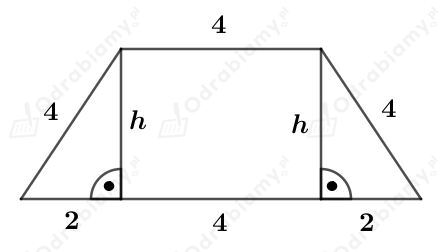
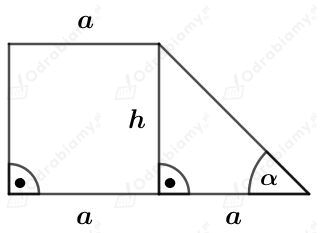
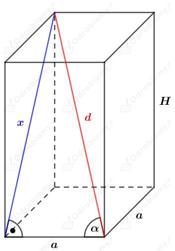

| Objętość dowolnego graniastosłupa wyraża się za pomocą wzoru: gdzie Pp jest polem powierzchni podstawy tego graniastosłupa, a H - długością jego wysokości. |
a)
Dany jest graniastosłup prawidłowy trójkątny, którego wszystkie krawędzie mają długość a.
Podstawą tego graniastosłupa jest trójkąt równoboczny.
Korzystając ze wzoru na pole trójkąta równobocznego, wyznaczmy pole powierzchni podstawy. Mamy:
Wysokość tego graniastosłupa również ma długość a.
Wyznaczmy objętość tego graniastosłupa. Mamy:
b)
Dany jest graniastosłup prawidłowy sześciokątny, którego wszystkie krawędzie mają długość a.
Podstawą tego graniastosłupa jest sześciokąt foremny. Każdy sześciokąt foremny zbudowany jest z sześciu przystających trójkątów równobocznych.
Korzystając ze wzoru na pole trójkąta równobocznego, wyznaczmy pole powierzchni podstawy tego graniastosłupa. Mamy:
Wysokość tego graniastosłupa również ma długość a.
Wyznaczmy objętość tego graniastosłupa. Mamy:
| Objętość dowolnego graniastosłupa wyraża się za pomocą wzoru: gdzie Pp jest polem powierzchni podstawy tego graniastosłupa, a H - długością jego wysokości. |
a)
Dany jest graniastosłup prawidłowy sześciokątny.
Podstawą tego graniastosłupa jest sześciokąt foremny o boku długości 4 cm. Taki sześciokąt foremny zbudowany jest z sześciu trójkątów równobocznych o boku długości 4 cm. Wyznaczmy zatem pole powierzchni podstawy tego graniastosłupa. Mamy:
Niech H będzie długością wysokości tego graniastosłupa. Zatem powierzchnia boczna zbudowana jest z sześciu prostokątów o bokach długości H i 4 cm.
Z treści zadania wiemy, że pole powierzchni bocznej tego graniastosłupa jest równe 180 cm2. Stąd otrzymujemy równanie:
Wyznaczmy objętość tego graniastosłupa:
b)
Dany jest graniastosłup prawidłowy trójkątny.
Podstawą tego graniastosłupa jest trójkąt równoboczny o boku długości 5 cm. Wyznaczmy zatem pole powierzchni podstawy tego graniastosłupa. Mamy:
Pole powierzchni bocznej tego graniastosłupa jest równe sumie pól jego podstaw. Zatem
Niech H będzie długością wysokości tego graniastosłupa.
Powierzchnia boczna zbudowana jest z trzech prostokątów o bokach długości H i 5. Stąd otrzymujemy równanie:
Wyznaczmy objętość tego graniastosłupa. Mamy:
| Objętość dowolnego graniastosłupa wyraża się za pomocą wzoru: gdzie Pp jest polem powierzchni podstawy tego graniastosłupa, a H - długością jego wysokości. |
Budynek można podzielić na dwie bryły:
Wyznaczmy objętość pierwszej bryły:
Wyznaczmy objętość drugiej bryły:
Wyznaczmy kubaturę (objętość) całego budynku:
| Objętość dowolnego graniastosłupa wyraża się za pomocą wzoru: gdzie Pp jest polem powierzchni podstawy tego graniastosłupa, a H - długością jego wysokości. |
a)
Dany jest graniastosłup prosty o wysokości długości 7 cm.
Jego podstawą jest przedstawiony na rysunku trapez:

Korzystając z twierdzenia Pitagorasa mamy:
Wyznaczmy pole powierzchni podstawy tego graniastosłupa. Korzystając ze wzoru na pole trapezu mamy:
Obliczmy objętość tego graniastosłupa. Mamy:
b)
Dany jest graniastosłup prosty o wysokości długości 3a.
Jego podstawą jest przedstawiony na rysunku trapez:

Korzystając z funkcji tangens mamy:
Wyznaczmy pole powierzchni podstawy tego graniastosłupa. Korzystając ze wzoru na pole trapezu mamy:
Obliczmy objętość tego graniastosłupa. Mamy:
|
Objętość dowolnego graniastosłupa wyraża się za pomocą wzoru: gdzie Pp jest polem powierzchni podstawy tego graniastosłupa, a H - długością jego wysokości. |
a)
Dany jest graniastosłup prawidłowy czworokątny. Jego podstawą jest kwadrat o polu 16 cm². Zatem bok tego kwadratu ma długość 4 cm.
Niech H będzie długością wysokości tego graniastosłupa.
Wiemy, że przekątna tego graniastosłupa ma długość 9 cm. Korzystając ze wzoru na długość przekątnej prostopadłościanu otrzymujemy równanie:
Wyznaczmy objętość tego graniastosłupa. Mamy:
b)
Rysunek:

Korzystając z funkcji sinus mamy:
Korzystając z funkcji cosinus mamy:
Korzystając z twierdzenia Pitagorasa mamy:
Korzystając ze wzoru na cosinus podwojonego kąta cos2𝛼=cos2𝛼-sin2𝛼 mamy:
Aby spierwiastkować obustronnie równość, obie strony muszą być dodatnie (bo również H>0). Zatem cos2𝛼<0 i kąt 𝛼 jest ostry, czyli
A stąd 𝛼∈(45o, 90o).
Wyznaczmy objętość tego graniastosłupa. Mamy:
Do dwóch akwariów (A i C) wrzucamy ten sam kamień.
Obliczmy, jaka jest objętość wody znajdującej się w akwarium A. Mamy:
Obliczmy, jaka jest łączna objętość wody z akwarium A i kamienia - patrzymy na akwarium B. Mamy:
Różnica otrzymanych objętości to objętość kamienia. Wyznaczmy zatem objętość kamienia. Mamy:
Obliczmy, jaka jest objętość wody znajdującej się w akwarium C. Mamy:
Obliczmy, jaka jest łączna objętość wody z akwarium C i kamienia. Otrzymamy wtedy objętość akwarium D. Mamy:
Korzystając z danych na rysunku, możemy ułożyć wyrażenie opisujące objętość akwarium D. Mamy:
Stąd otrzymujemy równanie: